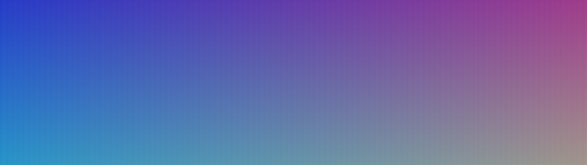

Element Timing: the elementtiming attribution tier
One HTML attribute — elementtiming="hero" — tells the browser "this element matters to me", and the browser reports back exactly when it painted. It is the only primitive that answers "which element was on screen, and when", and it is the missing half of our performance tier: we cataloged Core Web Vitals, the Performance API, LoAF and Priority Hints, but never the attribution primitive that names the element.
Everything on this page is measured in your browser, in this page, right now. Nothing is quoted from documentation. The headline finding is a trap that costs every RUM dashboard its element data.
1 · The specimen — tag three elements and watch them report
Below are three live specimens: a text node, a background-image box and an <img>. Two carry the elementtiming attribute. Every entry the browser emits for them is printed below, in real time.

elementtiming="hero-lcp" — also the LCP candidateA paragraph is a timing-eligible text node.
elementtiming="spec-text" elementtiming="spec-img"
elementtiming="spec-img"
This box owns text and paints a background image — one element, two possible entries.
no elementtiming → never reportedbuffered: true contract — and it is the only way to get element data at all.2 · Why this tier matters
Core Web Vitals tell you that a page was slow. They never tell you what was slow. Element Timing is the attribution layer: you tag the 5 elements you care about, and the browser hands you a paint timestamp for each one. For OpenDrones it names the drone-card hero that gated the cockpit; for Molt it names the client logo, the hero shot and the headline on every client site we ship.
The gap in our catalog
We had Core Web Vitals (P1), the Performance API (P2), LoAF (P2) and Priority Hints (P2) — and zero coverage of the attribution primitive itself. Grep of all 245 MC entries for elementtiming / PerformanceElementTiming / element timing: 0 hits.
What it replaces
The onload-handler hack. Every team that wants "when did the hero render" ends up bolting a listener onto the element and shipping the number themselves — which is client-side only, misses text nodes, and measures load, not paint.
Chromium only (so far)
Chrome 77+ for the core API; paintTime and presentationTime are Chrome 145+ only. Firefox and Safari have never shipped it. So this is a Chromium-only attribution channel — real, but it must degrade.
The headline trap
Element entries never appear in the performance timeline buffer. getEntriesByType('element') returns an empty array forever. Only a PerformanceObserver ever sees them. Page every "element timing RUM" tutorial gets this wrong.
3 · THE OBSERVER-ONLY LAW — the headline
Element entries are queued to the observer, never to the timeline buffer. Both the spec's "queue the PerformanceEntry" step and the getEntriesByType contract exist for every other entry type — this one skips it.
performance.getEntriesByType('element') is always empty — before the observer, after the observer, after dynamic elements are added, after a click. performance.getEntries() contains no element entry either. The only way to read element timings is a PerformanceObserver with type: 'element'.Why this breaks dashboards
The obvious RUM implementation — poll the timeline for element entries — silently records zero elements, forever, with no error. Worse, the near-miss API makes it worse: performance.getEntries({type:'element'}) ignores the filter entirely and returns the whole buffer, so a dashboard filtering on it gets every entry except the ones it wanted.
| API | Expected | Measured |
|---|---|---|
getEntriesByType('element') | the element entries | 0 — always |
getEntriesByType('ELEMENT') | same (case-insensitive) | 0 — always |
getEntriesByName('text-paint') | the text entries | 0 — always |
getEntries().filter(e => e.entryType==='element') | the element entries | 0 — always |
getEntries({type:'element'}) | filtered | filter ignored — returns the whole buffer |
observer.takeRecords() | pending entries | ✅ returns all 7 element entries |
observer.observe({type:'element', buffered:true}) | the entries | ✅ the only way |
4 · THE THREE-TIMESTAMP SPLIT — paintTime vs presentationTime vs renderTime
Chrome 145 (2026) extended the whole PaintTimingMixin family with two new timestamps. paintTime is when the rendering phase ended and painting began. presentationTime is when the element was actually on screen. renderTime is the classic field, and it is now a distinct third value.
renderTime and presentationTime are integers (millisecond granularity — the spec's privacy coarsening). paintTime is sub-millisecond fractional (e.g. 38.59999999962747). So you cannot compute a latency as presentationTime − paintTime and expect precision: the first term is rounded, the second is not.The field reference
| Field | Meaning | Granularity | Since |
|---|---|---|---|
paintTime | rendering phase ended, paint phase began | fractional ms | Chrome 145 |
presentationTime | element was actually drawn on screen | integer ms | Chrome 145 |
renderTime | the classic "display timestamp" | integer ms | Chrome 77 |
loadTime | resource load time (0 for text) | fractional ms | Chrome 77 |
startTime | renderTime if non-zero, else loadTime | integer ms | Chrome 77 |
duration | always 0 — not applicable to this interface | — | Chrome 77 |
Note: durationThreshold on an element observer is inert — the entry duration is always 0, so a threshold of 10 still delivers every entry (measured).
5 · THE LCP CORRELATION LAW
This is the production payload. The LCP entry names the largest element and gives a timestamp. The Element Timing entry for the same element gives the same timestamp. They are the same measurement, from two directions.
elementtiming-tagged, elementEntry.presentationTime === lcpEntry.startTime — exactly, to the millisecond. And elementEntry.paintTime === lcpEntry.paintTime too. Tag your LCP candidate and the LCP entry itself becomes redundant: the element entry carries the same number plus the element identity, the identifier you chose, the intersection rect and the natural dimensions.And the reason an image may never become the LCP
encodedBytes × 8 ÷ min(displayedArea, naturalArea), and the threshold is BPP < 0.05. Measured boundary: a 651-byte flat PNG at 600px wide scored 0.0514 → eligible; the same image at 640px (its natural width) scored 0.0452 → skipped. The divisor is min(displayed, natural), so upscaling an image never lowers its BPP — a small hero stretched across the viewport keeps its high bits-per-pixel, while a large hero shrunk to fit can drop below the threshold. The consequence for us: a hero that renders as a flat placeholder is not the LCP, so the LCP entry names something else entirely, and the number we report is about a different element than the one we optimised.The sweep resizes the flat placeholder and watches Chrome's LCP choice flip. Same bytes, same image — only the rendered area changes, and with it the bits-per-pixel and therefore the LCP eligibility.
What the element entry gives you that LCP does not
- Your own identifier.
identifieris the value you wrote in the attribute — stable across pages, unlike a CSS selector. - Every tagged element, not just the winner. LCP reports one element per candidate update; element timing reports all of them.
- Elements that are not LCP at all — the hero
<video>poster, the client logo, the headline — measured with the same machinery. intersectionRect— where it actually painted, and whether it was on screen at all.
6 · THE ELIGIBILITY LAW — which elements get reported
Not every tagged element produces an entry, and one element can produce two. This is the part that silently changes your numbers.
text-paint only if it owns the text — the text node must be its direct child. Tag a <div> that wraps a <p> and you get nothing: the text belongs to the <p>, not the div. This is the single most common way to tag an element and silently get zero data.<img>, <svg><image>, a <video> poster, and elements with a contentful background-image. display:none, visibility:hidden and opacity:0 elements report nothing at all. An element with both own text and a background image reports two entries — one text-paint, one image-paint — both carrying the same identifier.And the rect is the TEXT box, not the element box
text-paint entry, intersectionRect is the union of the text nodes' border boxes — the ink, not the element. A <p> that is 1200px wide but holds the word "Short" reports a rect 40px wide. The spec computes the union of the set of owned text nodes and intersects it with the visual viewport. For an image-paint entry it is the element's box (measured 200×80 for a 200×80 image).7 · THE DATA-URL TRIM LAW
The url field of an image entry is the resource URL — but the spec trims data: URLs, and the trim is easy to get wrong.
data: URL in entry.url is truncated to exactly 100 characters — not 100 bytes, not "the prefix". The measured length was 100 for every data-URL specimen. A text entry's url is the empty string (the spec says "0 for text"; the engine returns "", never "0").8 · THE LIVE-ELEMENT LAW
entry.element is not a snapshot — it is a live reference that the engine nulls out when the element leaves the document.
entry.element is not a snapshot — it is a live reference resolved against the current document tree. Remove the element from the DOM and the getter returns null, even though the entry still carries every timestamp. Re-insert it into the document and the reference comes back. Separately: a re-inserted element paints again, so you get a second entry with the same identifier — a duplicate your collector must de-duplicate.What this breaks
A RUM collector that does entry.element.closest('[data-analytics-id]') to name the element throws on any element the SPA has since unmounted — a null dereference in production code, from a performance callback. Guard it: const el = entry.element; if (!el) return;
9 · The 4-line recipe
The whole API, in four lines. This is what goes in a client site's <head> — or better, in the RUM snippet that ships with every Molt build.
<!-- 1. tag the elements you care about -->
<img elementtiming="hero" src="/hero.avif" fetchpriority="high" alt="">
<h1 elementtiming="headline">Ship it</h1>
<video elementtiming="demo-poster" poster="/poster.jpg" …>
<!-- 2. observe (buffered so you catch what already painted) -->
<script>
new PerformanceObserver((list) => {
for (const e of list.getEntries()) {
navigator.sendBeacon("/rum/element",
JSON.stringify({ id: e.identifier, name: e.name,
render: e.renderTime, pres: e.presentationTime,
paint: e.paintTime, load: e.loadTime }));
}
}).observe({ type: "element", buffered: true });
</script>buffered: true you only see elements painted after the observer registers. With it you also see everything already on screen. Since the observer has to run early, and the tag is in the HTML, the two must be in the same document — put the script in <head>, or accept a gap.10 · The capability ladder
Support is uneven inside the API, not just across browsers. The new fields landed in Chrome 145 (2026) — before that, paintTime and presentationTime are undefined and you fall back to renderTime.
| Browser | Core API | paintTime / presentationTime | Note |
|---|---|---|---|
| Chrome / Edge | 77+ (Dec 2019) | 145+ (2026) | the only engine with the new fields |
| Opera | 64+ | mirror | mirrors Chromium |
| Samsung Internet | 11+ | mirror | mirrors Chromium |
| Firefox | never | never | no implementation |
| Safari / iOS | never | never | no implementation |
≈63% of global traffic for the core API (Chromium family), and the same slice for the new fields. Firefox and Safari have never shipped it — so every element-timing integration needs a fallback path, and the fallback is not "no data", it is "use PerformanceObserver on largest-contentful-paint plus your own onload handlers".
11 · Ship patterns
OpenDrones Mission Control attribution
Tag the fleet-map hero, the drone-card that opened the session, and the telemetry headline. When a pilot reports "the cockpit was slow", the element entry says which one, with a timestamp — instead of the LoAF entry naming a script and leaving you to guess which DOM node it repainted.
OpenDrones Drone-card paint budget
Give every card a elementtiming="card-<id>". The intersection rect tells you the card was below the fold (rect 0×0) — so you can stop instrumenting cards the pilot never saw.
Molt Client-site hero audit
A one-line tag on every client hero gives the pitch a number: "your hero rendered at 2.1s, your headline at 400ms". The LCP entry alone cannot tell you the headline rendered fast while the image crawled.
Molt Ship gate
Gate the deploy: fail CI if presentationTime of the tagged hero exceeds budget. It is the first paint budget a client has ever been able to assert in CI.
Molt Sellable
"Element-level render audit" — a $1.5–3k line item that produces a table of every critical element's paint time per page, with a before/after. Cheaper to run than a Lighthouse audit and far more actionable.
Anti-pattern Don't tag everything
Every tagged element is an entry, and an entry with a data: URL carries 100 bytes of URL string in memory. Tag the 3–7 elements that matter, not every card.
12 · Engine law ledger
Every row below was measured on three engines — Chromium 155 (headless), Chromium 148 (headless) and Brave 154 (live, real HTTP). Where the engines agreed, the row is a law; where they differed, the difference is called out.
| # | Law | Measured | Engines |
|---|---|---|---|
| 1 | Element entries never enter the timeline buffer | getEntriesByType('element') → 0 on all three | 3/3 |
| 2 | getEntries({type:'element'}) ignores the filter | returns the whole buffer | 2/2 |
| 3 | Only a PerformanceObserver sees them | observe({type:'element',buffered:true}) → 7/7 | 3/3 |
| 4 | renderTime / presentationTime are integers | 76, 76 — paintTime 38.6 | 3/3 |
| 5 | LCP startTime === element presentationTime | exact match | 2/2 |
| 6 | data: URL trimmed to exactly 100 chars | 100 | 3/3 |
| 7 | Text entries have url === "" | "" (not "0") | 3/3 |
| 8 | duration is always 0; threshold inert | 0; threshold 10 still delivers | 2/2 |
| 9 | display:none / visibility:hidden / opacity:0 → no entry | 3/3 elements silent | 2/2 |
| 10 | Text + background image → two entries, one identifier | text-paint + image-paint | 2/2 |
| 11 | Off-screen elements report a 0×0 intersection rect | 0,0,0,0 | 2/2 |
| 11b | Text rect = union of text nodes (ink), not the element box | 40px text in a 1200px box | 2/2 |
| 11c | Image rect = the element box | 200×80 for a 200×80 image | 2/2 |
| 11d | The rect is a paint-time snapshot, not live | unchanged after scroll | 2/2 |
| 11e | An element must OWN its text node to report text-paint | tagged DIV wrapping a <p> → silent | 2/2 |
| 12 | entry.element nulls out when the element leaves the document | H1 → null | 2/2 |
| 13 | Remove + re-insert → a second entry, same identifier | 5 → 6 entries | 2/2 |
| 14 | elementtiming is a reflected DOM property | el.elementTiming = 'x' → attribute | 2/2 |
| 15 | Tagging after paint is retroactive (same frame) | entry appears | 1/1 |
| 16 | toJSON() carries paintTime + presentationTime | 16 keys | 2/2 |
| 17 | navigationId groups entries to one navigation | all equal | 1/1 |
| 18 | Two brand-new entry types on Chromium | interaction-contentful-paint, soft-navigation | 3/3 |
| 19 | Low-entropy images (< 0.05 BPP) are skipped as LCP candidates | flat hero → LCP names the paragraph | 2/2 |
| 20 | An upscaled image divides by its NATURAL area | 0.63× downscale still eligible | 2/2 |
| 21 | Element Timing still reports a low-entropy image | image-paint entry present | 2/2 |